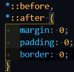
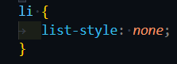
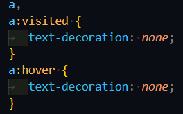
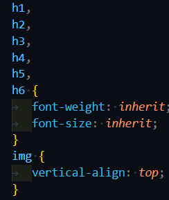
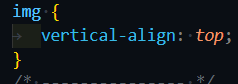
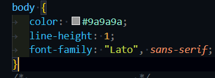
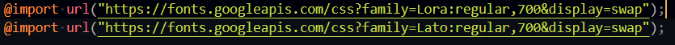
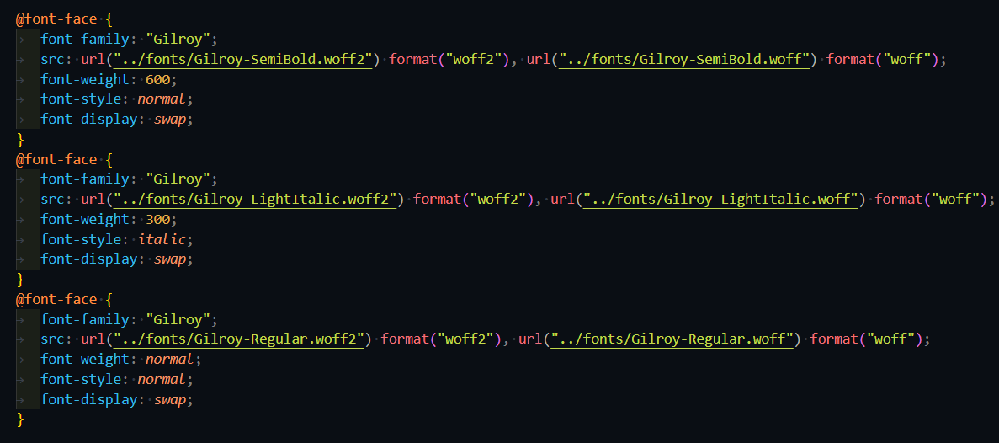

Стили обнуления
Цель сброса стилей состоит в том, чтобы, устранить разбежности между базовыми стилями веб-браузеров и привести их к одному плюс-минус стандартизированному виду. Применяются всегда в самом начале перед остальными пользовательскими наработками. В статье Эрика Мейера о Reset CSS десятилетней давности упоминается основная причина этого подхода, которая спустя годы до сих пор актуальна: Проблема заключается в том, что разные браузеры имеют свои настройки по умолчанию, причем все они не одинаковые. Мы думаем, что наш код изменяет начальное оформление страницы, однако это не совсем так, и с помощью reset-файлов можем сделать этот стандартный вид документа более однообразым для всех программ. Следовательно придется меньше времени тратить на борьбу с базовыми установками Firefox, Chrome и др. по умолчанию.
- Убрать фантомные отступы у псевдоэлементов

- Обнулить стили списков

- Обнулить стили ссылок

- Обнуление стилей заголовков

- Обнуление фантомных отступов у картинок

- указываем повторяющиеся стили в body

Селекторы
HTML-страницы, к которым могут применяться стили CSS, могут содержать огромное количество элементов.Это могут быть: tекст (вполоть для каждой буквы, каждого абзаца и.т.д.), изображения таблицы (каждая их строка, столбец или ячейка, и.т.д.) списки и.т.д..В общем, все эти и многие другие элементы, которые только можно видеть на веб-странице, можно оформлять и менять их внешний вид с помощью технологии CSS. Некоторые из них вы можете видеть на изображении ниже, они выделены красными прямоугольниками.Но, для того, чтобы применить какие-то конкретные стили, нужно сообщить браузеру, к какому элементу они будут применяться.В технологии CSS это можно сделать с помощью так называемых селекторов.Селекторы ( от англ. select - выбирать) - это элементы каскадной таблицы стилей CSS, которые указывают на тот элемент на веб-странице, к которому должны будут применяться стили..Например, для того, чтобы выделить какой-то абзац в тексте красным цветом, в CSS-файле нужно с помощью селектора указать на него.
Виды селекторов.
- * Универсальный селектор для стилизации всех потомков элеменита
- #ID Обращение по ID к элемениу, iD уникальный может быть только 1 название на странице
- .class обращение по классу. Такой способ приоритетние, начинается с ТОЧКИ
- p обращение по тегу, обратились ко ВСЕМ тегам P на странице
- span.blue-text Обратились ко тегам SPAN с классом blue-text на странице
- span.text.blue-text Обратились ко тегам SPAN с классами и text и blue-text на странице
- div p Уточнение, обращение по тегу, обратились ко всем тегам P но только к тем котрые находятся ынутри обьектов с тегам div
- .content .content__item Обратились ко объектам с классом .content__item но только к тем которые находятся внутри любых объектов с классом .content на странице
- .content p, .content span Обратились ко всем тегам P но только к тем которые находятся внутри любых объектов с классом .content на странице. И ко всем тегам SPAN но только к тем которые находятся внутри любых объектов с классом .content на странице.
- .content .content__item, .content .content__text Обратились ко всем объектам с классом content__item но только к тем которые находятся внутри любых объектов с классом .content на странице. И ко всем объектам с классом content__text но только к тем которые находятся внутри любых объектов с классом .content на странице
- div + p Обращение к первому селектору после указанного тега, в данном примере будет стилизоваться р после div
- And other
Работа со шрифтами
Шрифт в CSS — это ресурс, содержащий визуальное представление символов. На самом простом уровне он содержит информацию, которая сопоставляет коды символов с фигурами (называемые глифами), представляющие эти символы. Шрифты, использующие общий стиль дизайна, обычно группируются в семейства шрифтов, классифицируемые набором стандартных свойств шрифта. Внутри семейства форма, отображаемая для данного символа, может варьироваться в зависимости от толщины обводки, наклона или относительной ширины.Ресурсы шрифтов могут быть установлены локально на устройстве, в котором работает браузер. Для локальных ресурсов шрифта описательная информация может быть получена непосредственно из ресурса шрифта (например, из файла arial.ttf). Для загружаемых ресурсов шрифтов, также называемых веб-шрифтами, описательная информация включена со ссылкой на ресурс шрифта (например, для шрифта Poiret One).Используя различные шрифты для заголовков, абзацев и других элементов, можно задавать определенный стиль письменных сообщений, передавая желаемые эмоции и настроение. Окунаясь в многообразие шрифтов, не забывайте, что текст основного содержимого веб-страницы должен быть в первую очередь читабельным.Не рекомендуется использовать более двух шрифтов на странице, а желаемого контраста можно достигнуть за счет комбинирования шрифтов разной толщины, размера, начертания или же при помощи цвета. Более подробно с правилами веб-типографики вы сможете ознакомиться в предложенной статье.
Подклюключение семейст шрифта
- Удаленное подключение, подключение из внешего источка

- Локальное, подключение локальных файлов

Свойства для работы со шрифтом
Разрабатывая методы обращения со шрифтами, создатели спецификаций CSS преследовали две цели. Первая - дать возможность авторам Web-станиц придавать текстам вид, соответствующий типографским традициям разных стран, а также авторским замыслам оформления Web-страницы. Вторая цель - позволить все это делать как можно проще. При этом страница, будучи отображенной в окне браузера пользователя, хотя бы отдаленно должна напоминать то, что собирался показать автор. Во многом замыслы авторов Web-страниц ограничивались либо слабыми, либо не всегда удобными инструментами работы со шрифтами, предлагаемыми спецификациями языка HTML. Так как прямое назначение шрифта согласно его наименованию зачастую невозможно, предлагается назначать шрифт на основе набора его характеристик. Рассмотрим их.
- Font-family это группа шрифтов, объединяющая шрифты различных
способов
начертания (курсив,
полужирное начертание). Свойство наследуется. Синтаксис описания: {font-family:
имя_шрифта1,
имя_шрифта2, семейство_шрифтов}
- serif Глифы имеют завершающие штрихи, расширяющиеся или сужающиеся концы, или имеют фактически зазубренные окончания. Например, "Lucida Bright", "Lucida Fax", Palatino, "Palatino Linotype", Palladio, "URW Palladio", serif.
- sans-serif Глифы имеют гладкие окончания. Например, "Open Sans", "Fira Sans", "Lucida Sans", "Lucida Sans Unicode", "Trebuchet MS", "Liberation Sans", "Nimbus Sans L", sans-serif.
- cursive Глифы в курсивных шрифтах обычно имеют либо соединительные штрихи, либо другие рукописные характеристики, отличные от наклонных (italic) шрифтов. Глифы частично или полностью связаны, и результат больше напоминает рукописное перо или кисть, чем печатные буквы. Например, "Brush Script MT", "Brush Script Std", "Lucida Calligraphy", "Lucida Handwriting", "Apple Chancery", cursiv
- fantasy Фэнтезийные шрифты - это прежде всего декоративные шрифты, которые содержат игривое представление персонажей. Например, Papyrus, Herculanum, Party LET, Curlz MT, Harrington, fantasy.
- monospace Все глифы имеют одинаковую фиксированную ширину. Например, "Fira Mono", "DejaVu Sans Mono", Menlo, Consolas, "Liberation Mono", Monaco, "Lucida Console", monospace
- Font-size указывает желаемую высоту глифов из шрифта.Свойство наследуется.
- Font-style позволяет выбрать стиль начертания для шрифта. При этом разница
между курсивом и
наклонным начертанием заключается в
том, что курсив вносит небольшие изменения в структуру каждого символа, в то время как наклонное
начертание представляет
собой наклонную версию прямого шрифта
- normal Значение по умолчанию, устанавливает для текста обычное начертание шрифта.
- italic Выделяет текст курсивом.
- oblique Устанавливает наклонное начертание шрифта.
- font-weight задаёт насыщенность шрифта. Значение 100 соответствует самому
легкому варианту
начертания шрифта, а 900 — самому плотномуСвойство наследуется.
- 100 thin самому легкому варианту начертания шрифта
- 300 lite
- 400 normal устанавливает нормальную насыщенность шрифта.
- 500 medium средней насыщенности
- 600 semibold средней насыщенности
- 700 bold Делает шрифт текста полужирным
- 900 black Делает шрифтa текста жирным
- initial Устанавливает значение свойства в значение по умолчанию
- inherit Наследует значение свойства от родительского элемента.
Свойства для работы с текстом
Задавать стили CSS к тексту можно на уровне элемента body (для всей веб-страницы), элемента p (для абзаца), элемента span (для выделенного фрагмента текста) или любого другого элемента HTML.
- Color изменяет цвет шрифта. Установить цвет можно несколькими способами: #ff0000 (шестнадцатеричное значение цвета), orange (зарезервированное название цвета), rgb(120,17,90) (RGB значение).
- Text align предназначено для выравнивания текста в горизонтальном
направлении. Значения
свойства text-align указывают, что текст будет выровнен:
- left по левому краю
- center по центру
- right по правому краю
- justify по ширине, т.е. одновременно по левому и правому краям
- text-shadow горизонтальное_смещение вертикальное_смещение размер цвет; Добавляет тень к тексту. Прмер text-shadow: 1px 1px 1px #000;
- text-transform Управляет преобразованием текста в заглавные или прописные
символы.
- capitalize - Первый символ каждого слова в предложении будет заглавным. Остальные символы свой вид не меняют.
- lowercase - Все символы текста становятся строчными (нижний регистр).
- uppercaseВсе символы текста становятся прописными (верхний регистр)
- none Не меняет регистр символов.
- text-decorationможно использовать для декоративного оформления текста. В
качестве значений
свойства text-decoration можно использовать
следующие:
- none (без декоративного оформления)
- underline (подчёркивание)
- overline (линия над текстом)
- line-through (зачёркивание)
- blink (эффект мигания)
- line-height Устанавливает межстрочный интервал текста. Широко применяется при верстке текста.
- letter-spacing Определяет интервал между символами (буквами). Используется когда нужно разрядить текст.
- word-spacing Определяет интервал между словами. Используется когда нужно разрядить текст.
- text-indent Устанавливает величину отступа первой строки блока текста. При меняется, если нам нужно создать что-то типа красной строки.
- white-space Управляет свойствами пробелов между словами. Пименяется в основном со значением nowrap которое запрещает перенос строки. Таким образом весь текст отображается в одну строку и не ломается. Значение normal вернет все как было.